Speakers
2016 3rd Smart Logistics Day
- 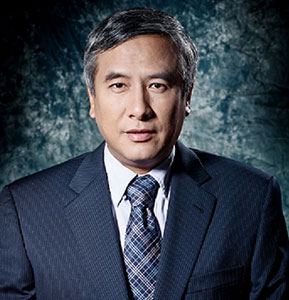
ZHOU Lin
Dean of Antai Colloge of Economics and Management, Shanghai Jiao Tong UniversityZHOU Lin
Dean of Antai Colloge of Economics and Management, Shanghai Jiao Tong University
Prof. Zhou Lin assumed the Deanship of Antai College of Economics and Management, Shanghai Jiao Tong University since April 2010. Prof. Zhou received Bachelor degree from Fudan University in 1982, and Ph.D. degree in Economics from Princeton University, USA in 1989. He had teaching experience at Yale University, Duke University, Arizona State University, City University of Hong Kong, and Tsinghua University. In 2006, Prof. Zhou was granted the Chang Jiang Scholar by Ministry of Education of China. He was elected Fellow of World Econometric Society in 2009, and is the first scholar in China maintain being granted this award. Before serving as the Dean of Antai College, Prof. Zhou was the previous Dean of School of Economics of Antai Collge and the Deputy Dean of Shanghai Advanced Institute of Finance, Shanghai Jiao Tong University.
Prof. Zhou’s research interest covers the basic theory areas of Microeconomics, including Game Theory, Mechanism Design, Social Choice Theory and Welfare Economics. He has published articles in most leading economic journals like Econometrica, Review of Economic Studies, Journal of Economic Theory, Games and Economic Behavior. He has also held refereeing duties in many renowned journals, like Vice-chief-editor of Mathematical Social Sciences and Social Choice and Welfare.
- 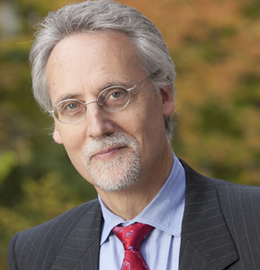
William Boulding
Dean of Fuqua School of Business, Duke University, USAWilliam Boulding
Dean of Fuqua School of Business, Duke University, USA
William Boulding is the Dean and J.B. Fuqua Professor of Business Administration at Duke's Fuqua School of Business. His previous roles at Fuqua include Deputy Dean, Senior Associate Dean for Programs, Associate Dean for the Daytime MBA program, Area Coordinator for the Marketing faculty, Co-Director of the Teradata Center for Customer Relationship Management, and the executive education Academic Program Director for both the Marketing Leadership Forum and the Advanced Management Program.
He received his BA in Economics from Swarthmore College and his Ph.D. in Marketing from the Wharton School, University of Pennsylvania. His research interests lie at the intersection of management, marketing and strategy. He publishes his research in marketing and management journals including Marketing Science, Management Science, Journal of Marketing, the Journal of Consumer Research, the Harvard Business Review, and the Journal of Marketing Research.
Dr. Boulding has served on the editorial boards of the Journal of Marketing Research, the Journal of Consumer Research, and the Journal of Service Research. He is a past Associate Editor for the Journal of Consumer Research, and a past Area Editor for Marketing Science.
Dr. Boulding's teaching interests span the areas of management, marketing and strategy. He is also a recipient of the Bank of America Faculty Award "for excellence in teaching, research, leadership, and service." With respect to industry contact, he has engaged in sponsored research, consulting, or executive development with a number of companies such as IBM, AT&T, Bank of America, Sears, Eli Lilly, Blue Cross/Blue Shield, Ford Motor Company, Lafarge, U.S. Postal Service, Stride Rite, BellSouth, Wolseley, Hanes, Harnischfeger, Bethlehem Steel, Thomson Newspapers, Siemens and Citibank.
-
Alfons Sauquet Rovira
Dean of ESADE Business School, Spain
Speech Slides DownloadAlfons Sauquet Rovira
Dean of ESADE Business School, Spain
Prof. Alfons Sauquet serves as Global Dean since September 2014, previously he served as Dean of the Business School, as Vice-Dean of Research and Knowledge and Director of University Programmes at ESADE.
Dr. Sauquet has published articles and books on Learning and Innovation. As part of his research, he has developed and managed Research projects on Knowledge & Innovation under FP5, FP6, FP7, funded by the European Community. He was principal researcher and founder of the research group GRACO. Lately he was Editing the volume "Business Schools and their contribution to Society", published by Sage, 2011.
Currently, serves in the Governing Board of the European Institute of Technology, Chairs the Board of Directors of the GMAC, and serves as vice-chair in the Board of the European Academy for Business in Society (EABIS).
Guest speaker at different forums such as the EFMD, AACSB, CLADEA, UNESCO and United Nations.
He has lectured at CBS, HEC, Wharton and Georgetown University.
Served in the editorial board of European Business Forum, Human Resource Development International, and Human Resource Management.
- 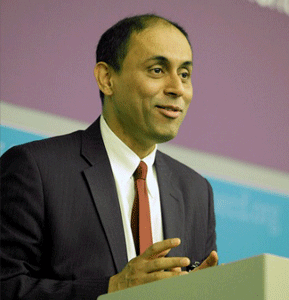
Soumitra Dutta
Dean of Johnson Graduate School of Management, Cornell University, USASoumitra Dutta
Soumitra Dutta became the eleventh dean of the Samuel Curtis Johnson Graduate School of Management at Cornell University. He previously served as the Roland Berger Chaired Professor of Business and Technology and founder and academic director of the eLab at INSEAD, a top-ranked graduate business school in Fontainebleau, France.
During his 22-year tenure at INSEAD include dean of external relations; dean of executive education; and dean of technology and e-learning. He has served as a visiting professor in the Haas School of Business at Berkeley, Oxford Internet Institute at University of Oxford, and Judge School at University of Cambridge in England. He has lived and worked in the U.S., Europe, and Asia, including stints as an engineer with GE in the U.S. and Schlumberger in Japan.
Dutta is an authority on the impact of new technology on the business world, especially social media and social networking, and on strategies for driving growth and innovation by embracing the digital economy. He is the co-editor and author respectively of two influential reports in technology and innovation the Global Information Technology Report (co-published with the World Economic Forum) and the Global Innovation Index (to be co-published with the World Intellectual Property Organization).
- 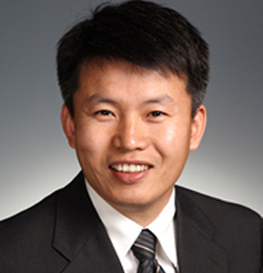
CAI Hongbin
Dean of Guanghua School of Management, Peking University, P. R. ChinaCAI Hongbin
Dean of Guanghua School of Management, Peking University, P. R. China
Hongbin Cai received his BA in Mathematics at Wuhan University in 1988, his M.A. in Economics at Peking University in 1991, and his Ph.D. in Economics at Stanford University in 1997. He is currently Professor in Economics and Dean of Guanghua School of Management, Peking University. He taught at University of California, Los Angeles before moving back to Peking University. He is a National Chang Jiang Scholar (awarded by Ministry of Education of China) and a National Outstanding Young Researcher (awarded by National Science Foundation of China).
Professor Cai has published many academic papers in top international journals in economics and finance, in a wide range of areas including game theory, Chinese economy, industrial organization and corporate finance. He is elected as a Fellow and a Council member of the Econometric Society.
Professor Cai is a member of the National People’s Congress, and a member of the Central Committee of China Democratic League and Vice Chairman of its Committee of Economic Affairs. He was the founding president of The Chinese Finance Association (TCFA, overseas). He serves on the boards of China Unicom and on the board of Sinopec Group as an outside director.
- 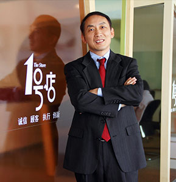
YU, Gang
Chairman & Co founder of Yihaodian
Speech Slides DownloadYU, Gang
Chairman & Co founder of Yihaodian
Gang Yu is the co-founder and Chairman of Yihaodian (www.yhd.com), a leading e-commerce company in China. Dr.Yu received Bachelor of Science in Space Physics of Wuhan University, Master of Science in Physics of Cornell University andPh. D. in Managerial Economics and Decision Sciencesof the Wharton School at the University of Pennsylvania. Prior to founding Yihaodian, he was the Vice President, Worldwide Procurement at Dell Inc.Dr. Yu also served as Vice President, Worldwide Supply Chain Operations at Amazon.com. Before Amazon, Dr. Yu served as the Jack G. Taylor Chair Professor in Business in the Department of Management Science and Information Systems at the McCombs School of Business, the University of Texas at Austin, and Director of the Center for Management of Operations and Logistics, and co-Director of the Center for Decision Making under Uncertainty.
In China, Dr. Gang Yu is a recognized figure through his involvement with a multitude of government and nongovernment organizations. He is a member of the National Thousand Talent Plan, and he served as an Economic Adviser to the Tianjin City Government. He has been a member of the judging committee of the National Natural Science Foundation of China. Dr. Yu has also been Adjunct Professor at Tsinghua University, Beijing University, Wuhan University, Shanghai Jiao Tong University, etc.
Dr. Yu has been awarded the Overseas Outstanding Young, which was issued by the Chinese Academy of Sciences in 2011. Dr. Yu has published over 80 journal articles, 4 books, and Dr. Yu holds 3 US patents. What’s more, he has served as editorial board member of 5 different internationalmagazines and audit team member of over 20 magazines.
He is the founder of CALEB Technologies Corporation in1995 in the United States.The flight management system the company developed was adopted by numerous large U.S. airlines. In 2002, it was merged by Accenture.
Since Dr. Yu co-founded the B2C e-commerce company Yihaodian in China with his partner Liu junling in 2008.
- 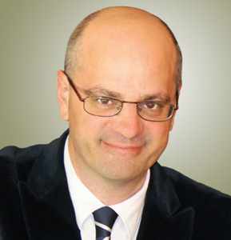
Jean-Michel Blanquer
President of ESSEC Business School, FranceJean-Michel Blanquer
President of ESSEC Business School, France
Jean-Michel Blanquer is Dean & President of ESSEC Business School since July 1, 2013.
A Professor of Public Law, he holds a PhD in Law from the University of Paris II and Master’s degrees in Philosophy and Political Sciences from Sciences Po. He was also a Special Student at Harvard University.
Jean-Michel Blanquer has occupied several administrative and scientific positions at the French Ministry of Education and Higher Education. Previously, he was Senior Lecturer in Public Law at the University of Tours (1994 - 1996), Professor of Public Law at the Institute of Political Studies of Lille and at the University of Lille 2 (2006 - 1998), he then became Director of the Institute of Latin American Studies at the University of Paris 3 (1998 - 2004) after which time he was elected as the local education authority Director of French Guiana. Subsequently in October 2006, he became the Deputy Head of Cabinet for the French Minister of Education, Higher Education and Research and in 2007, Chancellor of the Academy of Creteil (a large suburb of Paris) until 2009, after which time he held the position of Director General for Schools from 2009 to 2012.
President of the Institute of America since 2004, Jean-Michel Blanquer is the author of a number of books and articles on constitutional law, law theories, education and Latin America.
Jean-Michel Blanquer is 48 years old and holds honorary distinctions: Knight of the National Order of Merit and the French Legion of Honor, the highest decoration awarded in France.
-
Fiona Devine
Head of Manchester Business School, UK
Speech Slides DownloadFiona Devine
Head of Manchester Business School, UK
Fiona Devine is Professor of Sociology, Co-Director of the Centre for Research on Socio-Cultural Change (CRESC) and Acting Head of Manchester Business School (MBS). She was previously Head of Sociology (2004-7) and Head of the School of Social Sciences (2009-13). She joined the University of Manchester in 1994 and was promoted to Professor in 2001. Prior to joining Manchester, she worked at the University of Liverpool, the Policy Studies Institute and the (then) Department of Employment HQ in London. She studied Sociology and Government as an undergraduate degree at the University of Essex where she also completed an MA and PhD.
Fiona's research interests are in the fields of social stratification and mobility, work and employment and politics and participation from a comparative US/UK perspective. Much of her research has been funded by grants from the ESRC and the Leverhulme Trust. She is currently working on the BBC's Great British Class Survey with Professor Mike Savage at the LSE and a team based at Manchester, LSE and York.
-
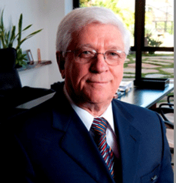
Emerson de Almeida
Founder & President of the Board Committee of Fundação Dom Cabral
Speech Slides DownloadEmerson de Almeida
Founder & President of the Board Committee of Fundação Dom Cabral
Emerson de Almeida was the Dean of Fundação Dom Cabral since its creation in 1976 until 2012, when he became President of the Board Committee. He has a Bachelor degree in Economics from the College of Economic Sciences – Universidade Federal de Minas Gerais. He also has a “Maitrise” from the University of Paris – Institut Français de Presse – (1972).
Emerson has guided the negotiations to implement the alliances with INSEAD (France), Kellogg (USA) as well as the implementation of a network corporation among business schools in Latin America and BRICs (Brazil, Russia, India and China). He has also directed the implementation of the FDC Partnership projects with companies; currently, FDC has almost 740 associated companies. He has been a member of the International Advisory Council of Guanghua Business School (Peking University) and the International INSEAD Council (France).
He is the author of the book “Plantando Carvalhos - Fundamentos da Empresa Relevante”, Campus Press, 2011, which is the second edition of “Fundamentos da Empresa Relevante – Meu aprendizado na FDC”, Campus Press, 2006, and has many articles written.
- 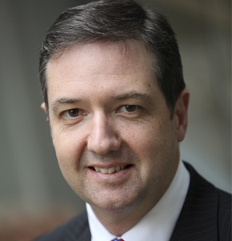
Chris Styles
Dean, UNSW Australia Business
School at UNSW Australia, Australia
Speech Slides DownloadChris Styles
Dean, UNSW Australia Business School at UNSW Australia, Australia
Professor Chris Styles became Dean of UNSW Australia Business School on July 1, 2014. Prior to his appointment as Dean, Chris was Deputy Dean of UNSW Australia Business School and Director of the Australian Graduate School of Management (AGSM). This appointment followed four years as Associate Dean (Management Education) at the University of Sydney Business School, where he led the School’s entry into mainstream Management Education.
Chris’s research focuses on international marketing and strategy, and in particular issues relating to the internationalization process, international alliances and international entrepreneurship. His work has been published in leading academic journals, management texts and government reports. Chris has taught at the China Europe International Business School (CEIBS) in Shanghai, Trinity College, Dublin, and on behalf of Duke Corporate Education for global corporations.
In addition to his academic activities, Chris has carried out consulting and executive teaching assignments in Asia, Australia and Europe, for clients such as Rio Tinto, Microsoft, PriceWaterhouseCoopers, HSBC, Westfield, Genpact, ArcelorMittal, Macquarie Bank, Austrade, Sony Music, IBM and Clayton UTZ.
Prior to entering academia Chris worked as a Marketing Manager for Procter & Gamble in Europe and the Middle East; and a market research consultant with Donovan Research in Perth, Western Australia.
-
Steef van de Velde
Dean of Rotterdam School of Management, Erasmus University, Netherland
Speech Slides DownloadSteef van de Velde
Dean, Rotterdam School of Management, Erasmus University, The Netherlands
Steef van de Velde (1960) has been the Dean of the Rotterdam School of Management, Erasmus Universitysince 2011, and a professor of Operations Management & Technologysince 1999.
Steef holds an MSc in Econometrics (Erasmus University) and a PhD in Mathematics and Computer Science (Eindhoven University of Technology). Before joining the Rotterdam School of Management in 1997, he worked at the University of Twente (Enschede, The Netherlands), the University of Toronto, and the Center for Mathematics and Computer Science (Amsterdam). In the recent past, he was the academic director of Dinalog, the Dutch National Institute for Advanced Logistics (2009-2010), a program director at KLICT (2001-2003), an institute that stimulated the development and application of knowledge in the area of chain and network science by co-financing industrial and scientific research projects, particularly in the agri-food sector; and a (part-time) senior consultant at Ortec Consultants, a leading developer and vendor of Supply Chain Optimization software (1999-2001).
He conducts research in the area of operations and supply chain management, and his current main interest lies in the area of behavioral operations management, how biases and bounded rationality affect operations management decision making. He has published extensively in leading operations research and operations management journals and in the past served on several editorial boards. He has been extensively involved in executive education for companies from many sectors (oil & gas, telecom, banking & insurance, food and beverage, base metals, logistics service providers, electronics) in various countries around the world.
- 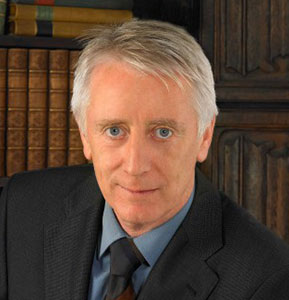
KEARNEY, Colm
Dean of Faculty of Business and Economics, Monash University, Australia
Speech Slides DownloadKEARNEY, Colm
Dean of Faculty of Business and Economics, Monash University, Australia
Colm Kearney is Dean and Head of the Monash Business School at Monash University. He holds economics degrees from University College Dublin, the Universities of Essex and Western Ontario, and his PhD is from the University of Warwick. Prior Monash University in 2012, Colm held several roles at Trinity College Dublin including Professor of International Business, Dean of the Faculty of Business Economic and Social Studies, and from 2005, Chief Academic Officer of the College. Colm researches and publishes in the areas of international business and international finance. He is best known for his work on volatility transmission and firm-level internationalisation.
- 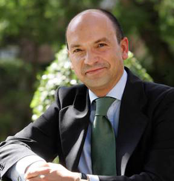
Santiago Iñiguez de Onzoño
Dean of IE Business School, SpainSantiago Iñiguez de Onzoño
Dean of IE Business School, Spain
Chairman of the Equal (European Quality Link), Professor Santiago Iñiguez de Onzoño also serves on the Boards of EFMD (European Foundation for Management Education) and AMBA (Association of MBAs, UK) and has been portrayed by the Financial Times as "Ambassador of Europe's business schools". He has also been instrumental in setting up the Sumaq Alliance, a network of eight leading business schools from the Spanish and Portuguese speaking world.
Prof Iñiguez's educational background includes obtaining Degree in Law with Honours at Universidad Complutense, Madrid, Spain; Recognized Student at University of Oxford, UK, (Fleming Scholar); MBA at Instituto de Empresa (IE); and PhD in Law at Universidad Complutense, Madrid, Spain.
He has been co-author of several books on moral and political philosophy as well as articles and case studies on business management. And he also serves as management consultant for various companies.
- 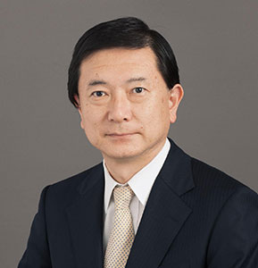
Hirokazu Kono
Dean of Keio Business School, Japan
Speech Slides DownloadHirokazu Kono
Dean of Keio Business School, Japan
Professor Kono specializes in production and operation management, production planning and control, and engineering economy. He has received Best Paper Award from JIMA (Japan Industrial Management Association), and Distinguished Service Award from JIIE (Japan Institute of Industrial Engineering), both in 2009. He is currently the President of JIMA. He also serves as the editor-in-chief of IE (Industrial Engineering) Review, and the deputy editor ofIndustrial Engineering & Management Systems. He is a Fellow and Founding Board Member of APIEMS (Asia Pacific Industrial Engineering and Management Society).
Hirokazu Kono assumed the office ofthe Dean of the Graduate School of Business Administration ofKeio University and Keio Business School in2009. After earning his BS degree in engineering in 1980 and MS in engineering in 1982 from Keio University, he received the degree of Doctor of Engineering from Keio University and joined the faculty of Graduate School of Business Administrationin 1987.In the global business school community, he served as the President of the Association of Asia-Pacific Business Schools in 2012. Also heis currentlya member of APAC (Asia Pacific Advisory Committee) of AACSB International and the EQUIS Committee of EFMD, as theDean of thebusiness school which received AACSB and EQUIS accreditations first in Japan.
-
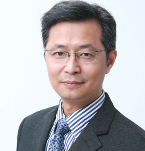
WU Xiaobo
Dean, School of Management Zhejiang University, P. R. China
Speech Slides DownloadWU Xiaobo
Dean, School of Management Zhejiang University, P. R. China
Professor Xiaobo WU is Qiushi Chair Professor of Strategy and Innovation Management, Dean of School of Management, Director of National Institute for Innovation Management, and Director of Global Zhejiang Entrepreneur Research Center, at Zhejiang University. He is also the director of the Zhejiang University—Cambridge University Joint Research Center for Global Manufacturing and Innovation Management. And He used to serve as the Senior Vice President of International Council for Small Business.
He got his BSc of EE in 1982, MSc of Mgt in 1989, and PhD of Mgt in 1992, from Zhejiang University. From 1982 to 1986, he used to work for government agencies and industrial organizations as an assistant engineer. He’d his post-doctorial program at Asian Institute of Technology, Thailand, 1996; as a British Council sponsored visiting scholar, he worked at Institute for Manufacturing and Judge Institute of Management Studies, Cambridge University, UK, 1996-1997; and as a State sponsored Fulbright Visiting Scholar, he was Sloan School of Management, MIT, USA, 2000 -2001.
He joined the Faculty of School of Management, Zhejiang University, since 1992. His current research interests include Managing Technological Innovation, Inclusive Innovation and entrepreneurship, Global Manufacturing and Network-based Competitive Strategy. He has published over one hundred academic papers and seven books in the related research areas. He is at editorial boards of academic journals, as IEEE TEM, AJTI etc. He also serves as board member and strategic advisor for some world known companies too, such as Siemens, Geely, Hikvision etc.
He serves as the board members of China Scholarship Council under the State Council, Chinese National MBA Education Supervisory Committee, the Steering Committee for Management Science and Engineering Management of Ministry of Education, China, and the founding member of Institute for Manufacturing, Cambridge University, UK. He was voted by students as one of the top ten most welcome professors of Zhejiang University, year 2004 and 2006.
-
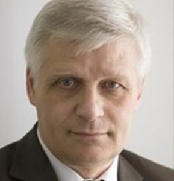
Yury Fedotov
Managing Director, Graduate School of Management, St. Petersburg University, Russia
Speech Slides DownloadProf. Yury Fedotov
Yury V. Fedotov serves as Director Managing at Graduate School of Management, St. Petersburg University, Russia. He gained Specialist Degree in Mathematics in Economics at Leningrad State University in 1977 and PhD in Economics at Leningrad State University in 1982. His research interest lies in performance management, production technology modeling, productivity analysis and production efficiency measurement, and efficiency measurement in public sector. He has been published in major academic publications. He is also member of editorial board of the journal "Human Resource Development International" and Economic School”, St.Petersburg. He is Global E-Governance Book Series Advisory Board Member, NECTEC (Bangkok), and the member of International Society on the New Institutional Economics.
-
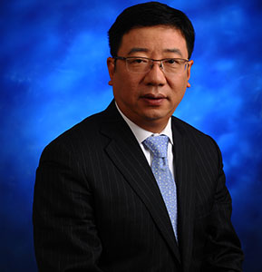
LU Wei
Associate Dean of Antai College of Economics and Management, Shanghai Jiao Tong UniversityLU Wei
Associate Dean of Antai College of Economics and Management, Shanghai Jiao Tong University
Professor LU Wei is Doctorate Supervisor and currently Associate Dean of Antai College of Economics & Management , Shanghai Jiao Tong University. He got his BA of Management Science, MS of Business Administration, and Ph.D.of Business Administration at Fudan University. He had also worked as Assistant Dean and Director of IMBA program at Fudan University.
Professor LU is Standing Director of Academic Committee of China Marketing Association, and an independent director of several companies including Shanghai Shibei Hi-Tech Park Co., Ltd., Shanghai Lujiazui Development Co.,Ltd., Shanghai Guangdian Electric Group Co., Ltd., and Hongkong Qixing Group. He is also consulted about strategic marketing by many multi-national companies, large firms and private enterprises.
His Major research fields include consumer behavior, marketing, strategic management, and the application of data mining in marketing.
He has led and completed dozens of significant projects in strategic management and marketing, including 7 national-level projects, 1 project of Ministry of Education of Norway and 43 consulting projects commissioned by firms. He has published 14 monographs, 6 textbooks, and over 80 papers and cases on major journals.
-
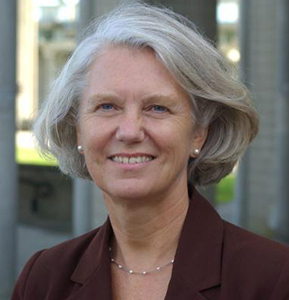
Eileen Peacock
Senior Vice President and Chief Officer Asia, AACSB International
Speech Slides DownloadEileen Peacock
Senior Vice President and Chief Officer Asia Pacific AACSB International
Eileen Peacock is senior vice president of Asia at AACSB International – The Association to Advance Collegiate Schools of Business. As seniorvice president, Dr. Peacock leads AACSB’s Asia Pacific initiatives, and is located in Singapore. Her efforts guide the organization’s membership and accreditation services within the region.In support of AACSB’s mission to advance quality management education worldwide, Peacock is responsible for developing effective relationships with Asia Pacific management education associations, colleges and institutions.
Prior to coming to AACSB International, Peacock was dean and professor of accountancy for the Charlton College of Business at the University of Massachusetts-Dartmouth (2004-2008). Dr. Peacock obtained her Bachelor of Technology from Loughborough University, England, and a Ph.D. from the University of Birmingham, England. In addition, sheobtained a Master of Accountancy from the University of Oklahoma, and maintains her CPA and CMA certification. Dr. Peacock’s research has been published in a wide variety of publications, including The Journal of Information Systems, Information & Management, The British Accounting Review, Review of Business Information Systems, Internal Auditing, Journal of Cost Management, Journal of International Accounting, Auditing and Taxation, and Database.
-
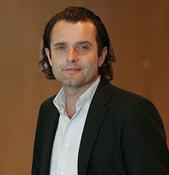
Eric Cornuel
CEO and General Director of European Foundation of Management Development (EFMD)
Speech Slides DownloadEric Cornuel
CEO and General Director of European Foundation of Management Development (EFMD)
Eric Cornuel is the Director General & CEO of EFMD in Brussels (Belgium) and of EFMD Global Network in Geneva (Switzerland).
He holds a degree of Sciences Po from IEP Paris, an MBA from HEC Graduate School of Management, Paris, and a DEA in strategy and management from Paris Nanterre University, together with a Doctoral Certificate in Strategy from HEC Graduate School of Management Paris and a PhD in management, written on international network organizations, from Paris Dauphine University.
Eric started his career as an entrepreneur by setting up an hydroelectric power plant in France when he was still a student. He was also Director of the HEC Institute for Central and Eastern Europe (Paris). He then served as Dean of KIMEP, at the time the leading Business and Economics school in Central Asia, from 1997 to 1999. He was awarded a honorary professorship for his achievements there. From 1996 to the present, Eric Cornuel has been affiliate Professor at HEC Graduate School of Management, Paris. He has taught for 15 years at various management schools in Europe and Asia.
Eric's key qualifications are in the areas of strategy, international management and entrepreneurship and he is a regular contributor to the Emerald Management Journals.
Eric Cornuel is, among others, a Board Member of the EIASM (European Institute of Advanced Studies in Management), CEIBS (China Europe International Business School), IJBS (International Journal of Business in Society), EABIS (European Academy of Business in Society), ISBM (International Schools of Business Management, and GFME (Global Foundation for Management Education). He also sits on the board of several companies.
-
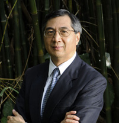
LAW, Japhet
Senior Advisor, EFMD Asia
Speech Slides DownloadLAW, Japhet
Senior Advisor, EFMD Asia
Professor Japhet S. Law obtained his Ph.D. in Mechanical/Industrial Engineering from the University of Texas at Austin in 1976. He joined the Chinese University of Hong Kong in 1986 and was formerly Professor in the Department of Decision Sciences and Managerial Economics and Dean of the Faculty of Business Administration at the University.
Prior to returning to Hong Kong, Professor Law was the Director of Operations Research at the Cullen College of Engineering and Director of Graduate Studies in Industrial Engineering at the University of Houston, and was also involved with the U. S. Space Program in his career with McDonnell Douglas and Ford Aerospace in the United States. Dr. Law has consulted with various corporations in Hong Kong and overseas. He is also active in public services, having served as Member of the Provisional Regional Council of the Hong Kong SAR Government and varies other Government advisory committees, and is also active on the boards of for-profit, non-profit, public and charitable organizations in Hong Kong and overseas.
Dr. Law has served on various committees and Board's of international organizations, including AACSB, Graduate Management Admission Council, and Oxfam International.
-
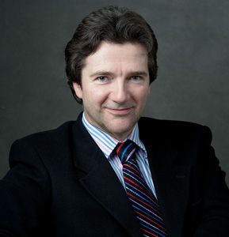
Andrew Main Wilson
Chief Executive of The Association of MBAs (AMBA)
Speech Slides DownloadAndrew Main Wilson
Chief Executive of The Association of MBAs (AMBA)
Andrew Main Wilson joined AMBA as Chief Executive in Summer 2013. Prior to joining AMBA, Andrew was Chief Operating Officer of the world’s most respected Organisation for Directors, the Institute of Directors, initially joining the IoD in the late 1990s as Managing Director of IoD Enterprises. Andrew was also formerly the Marketing Director & Commercial Director of Thomas Cook, the world’s oldest Travel Agency and Sales & Marketing Director of Citibank Diners Club.
Andrew also has a strong interest in Global Leadership excellence. As an interviewer and presenter, he has interviewed many of the world’s most influential Leaders of the 20th and 21st Centuries, including Bill Gates, Lady Thatcher, HRH The Duke of Edinburgh, Archbishop Desmond Tutu and Jack Welch.
As a professional Travel Photographer he has visited 160 of the world’s 200 countries, culminating in his current series of articles for ‘Nikon Owner’ magazine featuring one iconic image of every country on Earth.
Andrew was educated at Dulwich College and the University of Birmingham in England and the Harvard Business School in the USA.
-
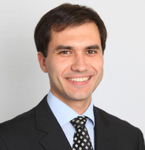
George ILIEV
Director of Development Markets at the Association of MBAs (AMBA)George ILIEV
Director of Development Markets at the Association of MBAs (AMBA)
George ILIEV is Director of Development Markets at the Association of MBAs (AMBA) in London. He is responsible for AMBA’s accreditation activities in China and East Asia, Latin America, Spain, Russia and London and has taken part in over 70 accreditation visits worldwide. George’s professional background before AMBA includes consulting work in media (CNN-Atlanta), renewable energy (Bulgaria) and water treatment (Bolivia); macroeconomic research for the Economic Policy Institute; and a stint of four years as managing editor of the China business news digest of Reuters Business Briefing and Dow Jones Factiva. He was a lecturer in China Business and Economy at Sofia University before 2007.
George completed his MBA at Emory University in Atlanta, where he was a Fulbright Scholar. He holds an MSc degree on China from the London School of Economics and a BA in Chinese Studies from Sofia University. He has also pursued specialisations at Anhui University and the Hong Kong University of Science and Technology.
George speaks Mandarin, Russian, Spanish, as well as his native Bulgarian. In his spare time he writes in his CorporateNature blog exploring parallels between nature and business.
-
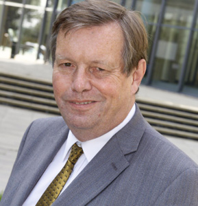
Andrew Lock
Chair of the Association of MBAs’ International Accreditation Advisory Board
Speech Slides DownloadAndrew Lock
Chair of the Association of MBAs’ International Accreditation Advisory Board
Chair of the Association of MBAs' International Accreditation Advisory Board
Andrew Lock is Chair of the Association of MBAs’ International Accreditation Advisory Board and is also an auditor for the EQUIS European business school accreditation scheme and has taken part in MBA and business school reviews for various bodies and governments around the world. He was Dean of the Business School at the University of Leeds until his retirement and is a past chairman of the Association of Business Schools which represents business schools in the UK. He was a member of the Chartered Institute of Marketing Senate and previously was vice-chair of the CIM Professional Body Board.
He organised the Public Chairs Forum and the Chairmen’s Business Forum in London and is a Companion of the Chartered Management Institute and the Association of Business Schools, a Fellow of the Royal Statistical Society, the Chartered Institute of Marketing, the Institute of Direct Marketing, and the Royal Society of Arts, a Chartered IT Practitioner and a Freeman of the City of London. He was a member of the Steering Group of the Leeds Financial Services Initiative which promotes Leeds as a financial centre. His work has been published, inter alia, in the Journal of Marketing Management, the European Journal of Marketing, the Journal of Advertising Research, the Journal of the OR Society and Management Learning.
-
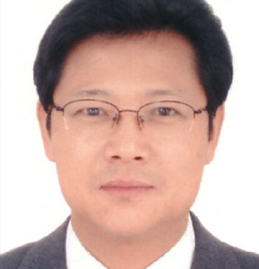
LIN, Mengquan
China Academic Degrees & Graduate Education Development Center Ministry of Education, P.R. China
Speech Slides DownloadLIN, Mengquan
Director of Evaluation Department, China Academic Degrees & Graduate Education Development Center Ministry of Education, P.R. China
Professor LIN Mengquan is Director of Evaluation Department of CDGDC (China Academic Degrees and Graduate Education Development Center). He is also the Deputy Secretary-General of Council of CAMEA (Chinese Advanced Management Education Accreditation), Secretary-General of ECADGE (Evaluation Committee for Academic Degrees and Graduate Education), Executive Director of CSADGE (Chinese Society of Academic Degrees and Graduate Education) and evaluation expert for projects of supported by the National Natural Science Foundation of China.
In recent years, Professor LIN has done a lot in the field of higher education quality assurance and evaluation, quality accreditation, quality assurance of cross-border higher education, and security evaluation of information systems. He undertakes the work of CAMEA, CBQAN (Cross-border Quality Assurance Network), Working Group on Mobility of Higher Education and Ensuring Quality Assurance of Higher Education among ASEAN Plus Three Countries, and CAMPUS Asia. And he was invited to give speeches on international conferences of higher education held by INQAAHE, APQN, IFAC, East Asia and ASEAN for several times.
Professor LIN is also a major member of three projects supported by the National Natural Science Foundation of China. Meanwhile he has published over 20 papers in the major journals home and abroad.
-
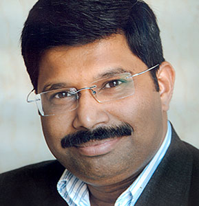
Amit AGNIHOTRI
Founder, MBAUniverse.com & Convener, Asian Management Conclave (AMC)
Speech Slides DownloadAmit AGNIHOTRI
Founder, MBAUniverse.com & Convener, Asian Management Conclave (AMC)
Mr Amit Agnihotri is a successful serial entrepreneur and a much respected analyst on Indian MBA education.
Amit first made a big impact on the Indian corporate scene by co-promoting exchange4media, where, as its Editorial Head, he provided thought-leadership to four magazines and an online journal. Since 2007, with the formation of MBAUniverse.com, he has been playing a role of a catalyst in the transformation of MBA Education Policy, and Practices, in India.
In 2010, he also conceptualized the Indian Management Conclave (IMC), India’s biggest MBA educator’s conference and the IMC Awards, a highly coveted recognition for Bschools. Taking the success of IMC forward, Amit has now conceptualized Asian Management Conclave (AMC), a pan-Asia platform for management education. The 1st AMC 2015 will be held in Singapore on March 12-13 and will be hosted by Singapore Management University.
In 2014, Amit co-authored, with Dr H Chaturvedi, the Whitepaper on 'Vision 2025 for Indian Management Education'.
Amit is an alumnus of MDI Gurgaon and has lectured at several top tier B-school including IIM Ahmedabad. He is widely quoted in press, including London based Financial Times, Paris based Le Monde, International Herald Tribune, Economic Times and Times of India.
-
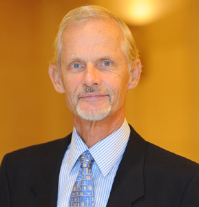
Hellmut Schutte
Dean and Vice-President, China Europe International Business School, P. R. ChinaHellmut Schutte
Dean and Vice-President, China Europe International Business School, P. R. China
Professor Hellmut Schütte became Dean and Vice-President of CEIBS after having served as Distinguished Professor of Management and holding the European Chair for Global Governance and Sino-European Business Relations for three years. CEIBS is the leading business school in China that is jointly owned by the Government of China and the European Commission. It is consistently rated by the Financial Times as the top school in Asia. He is particularly interested in the competition and cooperation between emerging market corporations and established Western/Japanese multinationals.
He is also Emeritus Professor of International Management at INSEAD whose faculty he joined in Fontainebleau, France, in 1981 after a career in the areas of marketing and investment banking. Professor Schütte studied economics and business administration in Germany and obtained his doctorate from the University of St.Gallen, Switzerland. He was visiting professor at the University of Tokyo, visiting professor at Boston University, and visiting scholar at Harvard University. Up to the fall of 2006, Professor Schütte was the Dean of INSEAD’s fast growing Asia Campus located in Singapore.
He is author of many articles and nine books, among them the best-seller ‘Strategies for Asia Pacific’. He is also actively involved in various board and advisory roles and consulting assignments. Among others, he is an Executive Director and Partner of BAF Spectrum, a business angel firm that invests in young enterprises.
-
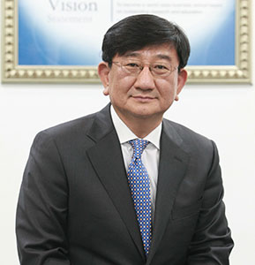
Young-Ryeol Park
Dean, Yonsei University School of Business, Korea
Speech Slides Download
Young Ryeol Park
Dean, Yonsei University School of Business, Korea
Prof. Young-Ryeol Park took office as Dean of the Yonsei University School of Business in November 2012. Previously, Dean Park actively participated in university administration. He took such positions as Dean of External Affairs and Development, Director of the Institute of East and West Studies, and Director of the Yonsei-SERI EU Centre. Dean Park received his Ph.D. with a major in International Business and a minor in Strategic Management from the University of Illinois at Urbana-Champaign.Dean Park’s teaching experience includesserving as a visiting assistant professor at the University of Illinois at Urbana-Champaign, his alma mater, and about 20 years as a professor at Yonsei University.
-
Sergey Myasoedov
Vice-Rector of the Russian Presidential Academy (RANEPA), RussiaSergey Myasoedov
Vice-Rector of the Russian Presidential Academy (RANEPA), Russia
Sergey Myasoedov was born in Moscow, Russia on the 1st October 1954. He graduated (1977) and got PhD in Economics (1980) at the Moscow University of International Relations (MGIMO). He studied at Durham Business School, Great Britain (1991); Wharton Business School, University of Pennsylvania, USA (1992) and Harvard Business School, USA (1993). In 2000 he got his second PhD in Sociology at the Moscow State University.
Since 2011 he is Vice-Rector of the Russian Presidential Academy (RANEPA), the biggest Russian University with 180 thousand students and 68 campuses. Since 1996 - Dean of the Institute of Business Studies (IBS-Moscow) – a leading management school of Russia, since 2010 - President of RABE (Russian Association on Business Education), Member of the Board of CEEVAN and Russian Management Association. He published 7 books and more than hundred of articles in economic reform and cross-cultural management, leadership. He teaches cross-cultural management and leadership.
-
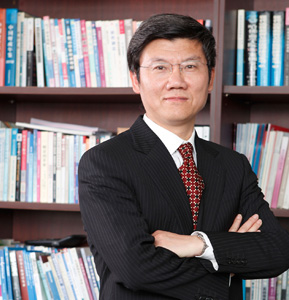
LI Kouqing
President of Shanghai National Accounting Institute, P. R. ChinaLI Kouqing
President of Shanghai National Accounting Institute, P. R. China
Li Kouqing was confirmed by the Ministry of Finance of China in 2012, to serve as the 2nd president of the Shanghai National Accounting Institute (SNAI), director-general of the Asia-pacific Finance and Development Center (AFDC), and deputy secretary of SNAI's Party Committee. Prior to the new roles, Li had been vice president of SNAI since 2003, executive deputy director-general of AFDC since 2007 and deputy secretary of SNAI's Party Committee since 2001. Prior to that, Li served as assistant to president of SNAI since 2001 and deputy secretary of Secretariat for APEC Finance and Development Program which was predecessor of AFDC, an institution to promote capacity building for the international community through training workshop, forum and academic research.
Prior to joining SNAI in 2000, Li had been teaching in the Department of Economics and Trade, Shanghai University of Finance and Economics since 1988. From 1998 to 2000, he was designated to be the Chinese administrator of the Sino-U.S Joint MBA Program at Shanghai University of Finance and Economics (SUFE).
Li earned his professorship in 2000. He received Doctor's Degree in Business Administration and Master's Degree in Economics from SUFE in 2001 and 1988 respectively. From 1996 to 1997, he was a visiting scholar at the American Graduate School of International Management (Thunderbird).
-
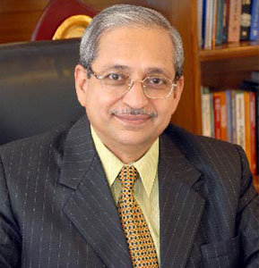
H CHATURVEDI
President EPSI & Director, BIMTECH
Speech Slides DownloadH CHATURVEDI
President EPSI & Director, BIMTECH
Dr. H Chaturvedi has more than three decades experience in teaching, research and administration. He is the president of Education Promotion Society of India (EPSI), an association of more than 700 Universities and B-schools in India.
As former Director in All India Council for Technical Education, New Delhi, a statutory body under MHRD, Government of India, he has been associated with formulation of policies, planning, regulation and control of Management Education as well as other disciplines under technical education. While working with the National Board of Accreditation (NBA) and the Board of Studies in Management of AICTE, he contributed in the application of various quality concepts in Management Education.
Dr. Chaturvedi joined Birla Institute of Management Technology, New Delhi as Director in 1999. Under his leadership, BIMTECH has launched postgraduate programs in insurance, retailing, entrepreneurship and international business and forged linkages with 20 B-schools of USA, Canada, UK, France, Poland, Austria, Hungary and Tanzania. Because of its multifaceted growth, the institute has been consistently ranked among top 20 B-schools in the country by reputed B-school rankings.
-
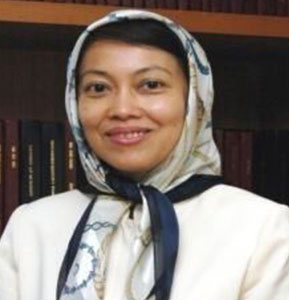
Arfah Salleh
President of UPM Putra Business School, Malaysia
Speech Slides DownloadArfah Salleh
President of UPM Putra Business School, Malaysia
Arfah Salleh is Professor of Human Governance at Putra Business School (PUTRA) where she is now the CEO and President. She holds a Bachelor’s degree in Accountancy; a Master’s degree in Finance & Investment; and a PhD in the area of ICT integration in accounting education and in systems design. She is also a Fellow member of CPA Australia and a member of the Malaysian Institute of Accountants with training and work experience in investment and fund management.
Since assuming full-time academic position in the late eighties, Arfah has always maintained close linkage with the accounting profession and industry through serving on the committees of various professional accountancy bodies. For instance, from 2006 to 2008, she was appointed a member of the Malaysian Accounting Standards Board (MASB). In 2010, Arfah was invited to participate as a member of the Industry Advisory Panel initiated by Deloitte. She was also involved in an advisorial capacity in the training programmes for entrepreneurs conducted by SME Bank (2009) and MARA (1990).
At the international front, she has recently been appointed member of the Committee on Issues in Management Education of the Association to Advance Collegiate Schools of Business (AACSB) with head office in Tampa Florida and member of the Asia Pacific Advisory Council of AACSB. She was also Adviser for the ICT implementation in accounting programme at Tampere University of Applied Science, Finland.
-
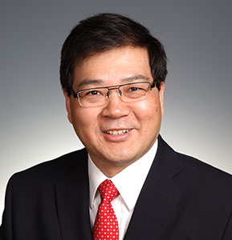
XU, Xinzhong
Dean of Lingnan College (University), San Yen-San University, P. R. ChinaXU, Xinzhong
Dean of Lingnan College (University), San Yen-San University, P. R. China
Dr. Xinzhong Xu is currently Professor of Finance and Dean of Lingnan (University) College, Sun Yat-sen University. His previous positions include: Professor of Finance and Senior Associate Dean of Guanghua School of Management, Peking University, Economist at the Bank of England, Chair Professor of Finance at Lancaster University Management School, Senior Lecturer at Manchester Business School, and Research Fellow at Warwick Business School.
Dr. Xu has served on several editorial boards for journals and is now Editor-in-Chief of Quarterly Journal of Finance (in Chinese) and Associate Editor of Journal of Corporate Finance. He is also Secretary General of the China Finance Annual Conferences and was chairperson of the Board of Directors of the 1st China Finance Annual Conferences.
Dr. Xu’s research areas are in behavioral finance, corporate governance, and financial engineering. His research findings are highly practical and have been widely quoted. He has had more than 20 journal articles published on internationally and domestically leading journals, including Journal of Financial Economics, Journal of Financial and Quantitative Analysis, Review of Economics and Statistics, Economic Research (in Chinese), and Management World (in Chinese).
Dr. Xu has also been leading two Key Research Projects of the National Natural Science Foundation of China and two projects from the National Foundation for Distinguished Young Scientists and Program for Innovative Research Team in Universities of the Ministry of Education.
Dr. Xinzhong Xu received his B. Sc in Geophysics from Peking University in 1985, MBA from Aston University in 1989, and Ph. D. from Lancaster University in 1993.
-
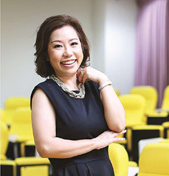
KRAIRIT, Donyaprueth
Dean of School of Management, Asian Institute of Technology, ThailandKRAIRIT, Donyaprueth
Dean of School of Management, Asian Institute of Technology, Thailand
Dr. Donyaprueth Krairit is currently an Associate Professor and serves as Dean of School of Management, Asian Institute of Technology in Thailand. She obtained B.S. Degree in Computer Science at Thammasat University, M.S. Degree in Telecommunications at University of Colorado at Boulder, and Ph.D Degree in Telchnology, Management and Policy in Telecommunications at Massachusetts Institute of Technology (MIT). She is also a member of the MIT Alumni Club of Thailand.